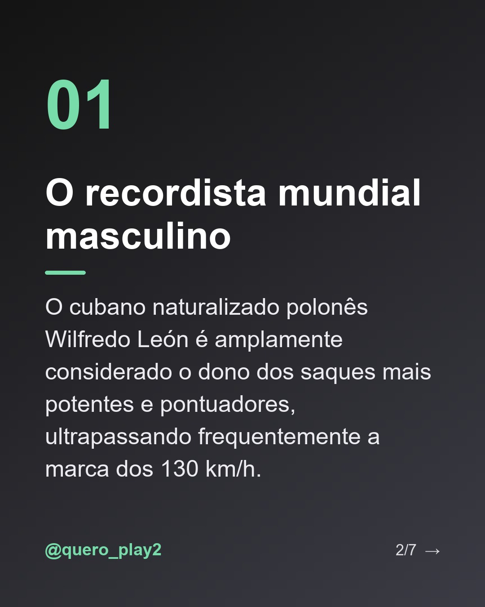
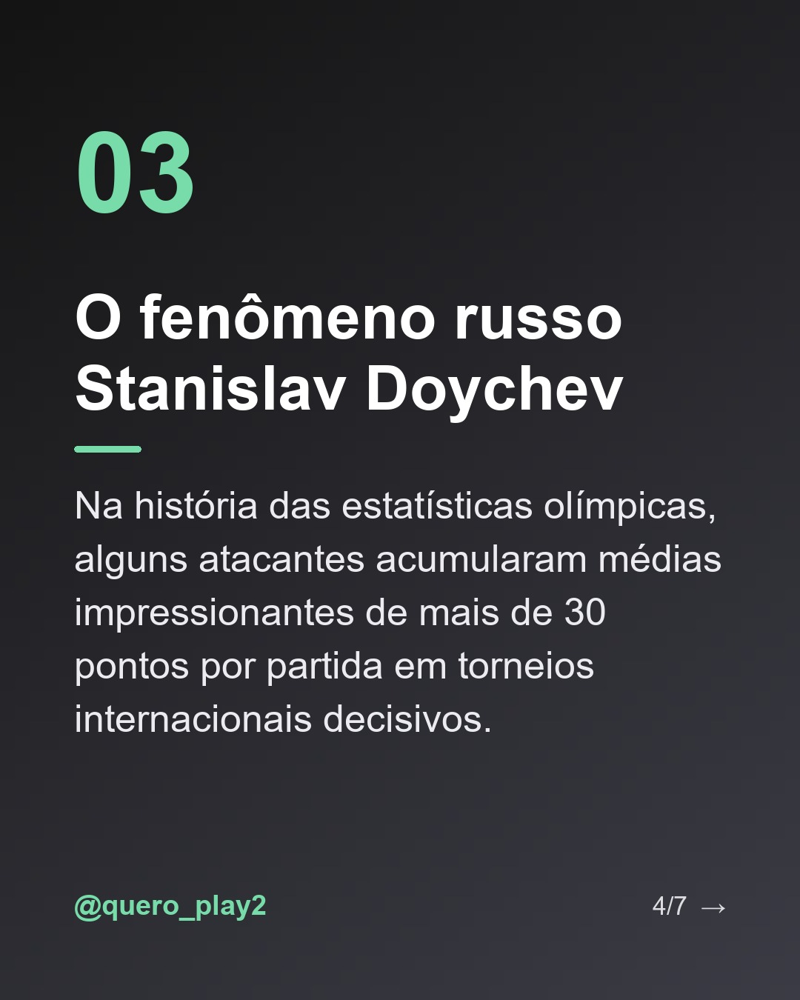

@quero_play2


@quero_play2 Você já parou para pensar em quem realmente manda na hora de pontuar no voleibol mundial? 🏐✨
Neste carrossel, separei alguns dos nomes mais lendários que transformaram a arte de atacar em pura poesia (e muita potência!). De saques supersônicos a diagonais impossíveis, esses atletas marcaram época.
Arrasta pro lado para conhecer os detalhes e me conta nos comentários: quem é o melhor atacante de todos os tempos para você? 👇
#volei #volleyball #curiosidadesdovolei #giba #wilfredoleonn #superliga #voleibrasil #esportes #atletas #fatossobrevolei